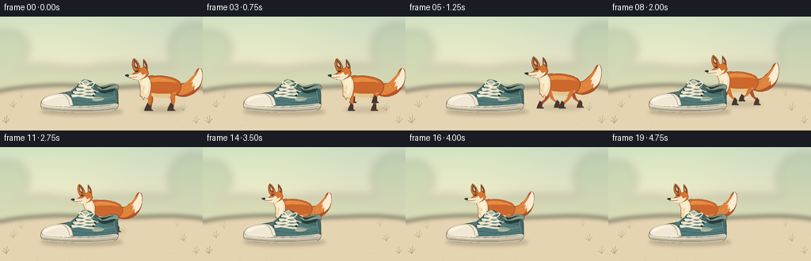
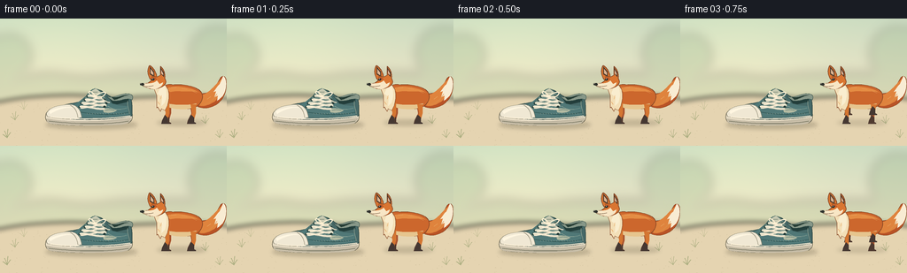

CODING AGENTS AS PIXEL WORLD MODELS
traex/GPT-6.1-Sol · dynamic_spatial_relationship_0031
点击播放 · 原生 RGB 像素
逐轮保存的候选
回放视频、检查图与代码变化。
每份候选均可单独播放。实际图片检查记录在下方工具轨迹中。
候选 01播放与检查图
点击播放 · 原生 RGB 像素


展开代码变化
--- 上一保存版本
+++ 本次保存版本
@@ -0,0 +1,203 @@
+from pathlib import Path
+import json, math
+import numpy as np
+from PIL import Image, ImageDraw, ImageFilter
+from artifact_io import save
+
+ROOT=Path(__file__).resolve().parent
+SPEC=json.loads((ROOT/'task_spec.json').read_text())
+W,H=SPEC['width'],SPEC['height']
+S=4
+rng=np.random.default_rng(21)
+
+# All painting is done at fourfold resolution, with explicitly sampled curves.
+def bezier_path(items):
+ out=[]; current=None
+ for item in items:
+ if len(item)==2:
+ current=np.array(item,dtype=float); out.append(tuple(current))
+ else:
+ c1=np.array(item[:2]); c2=np.array(item[2:4]); end=np.array(item[4:])
+ start=current.copy()
+ for t in np.linspace(0,1,20)[1:]:
+ p=(1-t)**3*start+3*(1-t)**2*t*c1+3*(1-t)*t*t*c2+t**3*end
+ out.append(tuple(p))
+ current=end
+ return out
+
+class Painter:
+ def __init__(self, im, x=0,y=0,scale=1):
+ self.im=im; self.d=ImageDraw.Draw(im); self.x=x;self.y=y;self.scale=scale
+ def p(self,p):return ((self.x+p[0]*self.scale)*S,(self.y+p[1]*self.scale)*S)
+ def path(self,items,fill,outline=None,width=.7):
+ pts=[self.p(p) for p in bezier_path(items)]
+ self.d.polygon(pts,fill=fill)
+ if outline:self.d.line(pts+[pts[0]],fill=outline,width=max(1,round(width*S*self.scale)),joint='curve')
+ def line(self,pts,fill,width=1):
+ self.d.line([self.p(p) for p in pts],fill=fill,width=max(1,round(width*S*self.scale)),joint='curve')
+ def curve(self,pts,fill,width=1):self.line(bezier_path(pts),fill,width)
+ def ellipse(self,box,fill,outline=None,width=.6):
+ self.d.ellipse([self.p(box[:2]),self.p(box[2:])],fill=fill,outline=outline,width=max(1,round(width*S*self.scale)))
+
+# Soft sunlit clearing: a quiet, fixed background supports the spatial action.
+def background():
+ yy,xx=np.mgrid[0:H*S,0:W*S].astype(float); y=yy/S;x=xx/S
+ c=np.empty((H*S,W*S,3))
+ top=np.array([203,219,193]); bottom=np.array([242,229,199])
+ k=np.clip(y/96,0,1)[...,None]
+ c[:]=top*(1-k)+bottom*k
+ glow=np.exp(-((x-64)/107)**2-((y-33)/75)**2)[...,None]
+ c+=glow*np.array([10,10,3])
+ c+=rng.normal(0,.32,c.shape)
+ im=Image.fromarray(np.uint8(np.clip(c,0,255))).convert('RGBA')
+ landscape=Image.new('RGBA',im.size);p=Painter(landscape)
+ p.path([(0,72),(30,65,48,58,76,64),(111,69,124,61,151,62),(187,59,215,66,256,56),(256,94),(0,94)],(152,179,140,72))
+ p.path([(0,85),(44,73,77,80,109,76),(154,70,206,78,256,73),(256,103),(0,103)],(166,190,143,83))
+ # Distant defocused foliage.
+ for cx,cy,r in [(11,42,24),(245,40,31),(-12,60,27),(269,65,23)]:
+ p.ellipse((cx-r,cy-r,cx+r,cy+r),(131,167,121,58))
+ landscape=landscape.filter(ImageFilter.GaussianBlur(6*S));im=Image.alpha_composite(im,landscape)
+ ground=Image.new('RGBA',im.size);p=Painter(ground)
+ p.path([(0,94),(44,85,96,85,129,90),(171,89,225,84,256,91),(256,144),(0,144)],(229,212,177,255))
+ # Shallow shaded sweep across the clearing, not a hard horizon.
+ ground=ground.filter(ImageFilter.GaussianBlur(3*S));im=Image.alpha_composite(im,ground)
+ detail=Image.new('RGBA',im.size);p=Painter(detail)
+ for _ in range(185):
+ x=float(rng.uniform(0,256));y=float(rng.uniform(95,144));r=float(rng.uniform(.18,.65))
+ p.ellipse((x-r,y-r*.4,x+r,y+r*.4),(133,119,82,int(rng.uniform(15,46))))
+ for x,y,k in [(17,115,1),(232,119,1),(27,103,.6),(224,100,.6),(8,135,1.1),(248,135,.9)]:
+ for dx,dy in [(-3,-8),(1,-10),(4,-6),(-5,-4)]:
+ p.curve([(x,y),(x+dx*.3,y+dy*.4,x+dx*.7,y+dy*.8,x+dx,y+dy)],(130,147,94,150),.6*k)
+ im=Image.alpha_composite(im,detail)
+ return im
+
+BASE=background()
+
+def shadow(im,cx,cy,rx,ry,opacity):
+ l=Image.new('RGBA',im.size);d=ImageDraw.Draw(l)
+ d.ellipse(((cx-rx)*S,(cy-ry)*S,(cx+rx)*S,(cy+ry)*S),fill=(67,62,41,opacity))
+ return Image.alpha_composite(im,l.filter(ImageFilter.GaussianBlur(2.2*S)))
+
+INK='#834525'
+ORANGE='#cc672d'
+
+def draw_fox(im,cx,cy,scale,phase,moving,t):
+ layer=Image.new('RGBA',im.size);p=Painter(layer,cx,cy,scale)
+ # Four legs alternate in a compact running gait. The far legs are shaded.
+ def leg(hip,phase,far=False):
+ hx,hy=hip
+ if moving:
+ swing=math.sin(phase); lift=max(0,math.cos(phase))
+ footx=hx+12*swing; footy=22-10*lift
+ kneex=hx+5*swing; kneey=11-3*lift
+ else:
+ footx=hx-1;footy=22;kneex=hx+1;kneey=11
+ col='#aa542e' if far else '#d47632'; dark='#4f3a30' if far else '#453832'
+ p.path([(hx-3,hy),(hx+3,hy),(kneex+2,kneey),(footx+2,footy-4),(footx+1,footy),(footx-4,footy),(footx-2,footy-5),(kneex-2,kneey)],col)
+ p.path([(footx-1,footy-9),(footx+2,footy-6),(footx+2,footy-1),(footx+4,footy),(footx+4,footy+1),(footx-5,footy+1),(footx-4,footy-3)],dark)
+ leg((12,0),phase+math.pi,True);leg((-15,0),phase,True)
+ # Large fox tail, tapering to a creamy white plume.
+ wag=(math.sin(phase)*2 if moving else math.sin(t*1.2)*1.2)
+ p.path([(15,-8),(24,-13,28,-10,33,-15+wag),(43,-22+wag,42,-30+wag,47,-31+wag),(53,-30+wag,51,-9,44,-3),(38,5,25,8,17,3)],'#b85326',INK,.55)
+ p.path([(21,-9),(34,-12,38,-23,47,-29+wag),(45,-17,44,-8,37,-2),(28,4,21,4,17,1)],'#df833d')
+ p.path([(43,-22+wag),(45,-26+wag,46,-29+wag,47,-31+wag),(52,-28+wag,51,-14,46,-8),(44,-6,42,-4,40,-3),(41,-9),(37,-7),(39,-14),(36,-13),(41,-20)],'#f8ecd3')
+ p.curve([(25,1),(34,-1,37,-6,40,-11)],'#d8914e',.6)
+ # Long torso with an arched back and thick neck.
+ p.path([(-23,-5),(-26,-18,-18,-23,-10,-21),(0,-22,13,-20,20,-15),(26,-10,24,-2,18,3),(9,8,-6,7,-17,3),(-24,0,-24,-2,-23,-5)],ORANGE,INK,.65)
+ p.path([(-18,-17),(-5,-21,12,-18,20,-12),(13,-15,5,-13,-6,-14),(-13,-13)],'#e48c43')
+ p.path([(-22,-2),(-12,2,3,3,17,0),(15,6,5,8,-8,6),(-20,4,-25,1,-22,-2)],'#e6c58e')
+ leg((13,1),phase,False);leg((-17,-1),phase+math.pi,False)
+ # Chest ruff is broad and light, distinct from the orange saddle.
+ p.path([(-23,-24),(-13,-19,-13,-8,-16,2),(-19,8),(-23,6),(-24,9),(-27,4),(-28,5),(-28,-9),(-32,-19)],'#f3dfb7',INK,.45)
+ p.path([(-22,-24),(-15,-16,-17,-6,-19,-1),(-23,3),(-22,-7),(-27,-11)],'#f9edcf')
+ # Head silhouette, ears, tapered muzzle. It faces left throughout the action.
+ p.path([(-34,-26),(-39,-31,-39,-40,-36,-43),(-32,-41,-28,-34,-28,-30),(-24,-32),(-24,-42),(-20,-39,-18,-33,-19,-28),(-15,-23,-21,-18,-27,-17),(-32,-15,-41,-17,-45,-22),(-38,-23)],'#d97531',INK,.65)
+ # Dark ear edges and pale warm inner surfaces.
+ p.path([(-36,-42),(-31,-36),(-31,-30),(-36,-33)],'#533c2d')
+ p.path([(-35,-39),(-32,-35),(-32,-32),(-35,-34)],'#dbb492')
+ p.path([(-24,-41),(-20,-35),(-20,-30),(-23,-33)],'#4f382a')
+ p.path([(-23,-38),(-21,-34),(-21,-32),(-23,-34)],'#e4b695')
+ # White cheek and long slender muzzle define a fox rather than a cat.
+ p.path([(-28,-26),(-31,-22,-37,-23,-44,-22),(-43,-18,-37,-17,-31,-16),(-24,-17,-21,-21,-21,-24),(-25,-22)],'#f8e6c5')
+ p.path([(-43,-23),(-47,-23),(-47,-21),(-44,-20),(-42,-21)],'#2d302c')
+ p.ellipse((-46.8,-22.9,-45.5,-22.1),'#888776')
+ p.curve([(-44,-19.6),(-38,-18.7,-35,-19.5,-32,-20.1)],'#694e35',.55)
+ p.path([(-34,-29),(-31,-30,-29,-29,-28,-27),(-32,-27)],'#bc5729')
+ p.ellipse((-33.8,-28.4,-30.7,-26),'#282a24')
+ p.ellipse((-33,-28.2,-32.2,-27.4),'#fff5de')
+ p.curve([(-34,-29.8),(-31.7,-31,-29.8,-30.8,-28.9,-29.7)],'#965023',.65)
+ # A few directional fur strokes, kept fine at the final image scale.
+ for points in [[(-12,-18),(-6,-18)],[(0,-17),(6,-16)],[(12,-14),(17,-12)],[(-23,-9),(-24,-5)],[(-27,-2),(-25,1)],[(29,-5),(33,-8)]]:
+ p.line(points,'#e8a45f',.42)
+ return Image.alpha_composite(im,layer)
+
+# The foreground shoe remains rigid and fixed so occlusion is unambiguous.
+def draw_shoe(im):
+ layer=Image.new('RGBA',im.size);p=Painter(layer)
+ # Rubber midsole and slightly curved dark tread.
+ p.path([(53,106),(59,101,69,100,81,100),(124,100),(147,102),(151,109,150,116,145,118),(129,121,78,122,59,119),(51,118,50,111,53,106)],'#e9dec7','#736d58',.65)
+ p.path([(53,113),(73,118,119,117,148,112),(148,117,145,119,137,120),(107,122,72,121,58,119),(54,118,52,117,53,113)],'#c5bba5')
+ p.curve([(55,116),(83,120,128,120,145,116)],'#686955',.8)
+ # Canvas upper in desaturated forest blue.
+ p.path([(57,104),(61,99,77,97,91,94),(98,90,101,83,108,80),(115,80,121,87,126,89),(135,90,138,83,146,87),(150,91,149,104,149,110),(129,115,83,116,56,111)],'#466867','#344a46',.8)
+ p.path([(80,99),(94,93,98,84,108,81),(109,90,122,96,133,98),(144,99),(145,109),(119,113,94,113,76,109)],'#507877')
+ p.path([(123,90),(131,92,139,87,145,88),(145,94),(132,97),(127,96)],'#233e3b')
+ # Heel rim and lining, visible opening.
+ p.path([(120,88),(130,91,135,84,144,85),(149,85,151,88,149,92),(142,89,134,95,127,93)],'#879788','#314c46',.5)
+ p.path([(126,89),(135,90,137,86,145,87),(140,87,135,91,129,92)],'#263d35')
+ # Tall tongue, exposed behind crisscross laces.
+ p.path([(91,95),(98,88,101,80,108,79),(114,81,119,88,121,95),(108,99),(96,100)],'#6d8980','#3d605a',.55)
+ p.path([(103,82),(108,79),(113,83),(110,87),(104,87)],'#c8c9b1')
+ p.line([(105,83),(110,83)],'#687a69',.6)
+ # Side panel double stitching and quiet cloth texture.
+ p.curve([(82,103),(98,100,108,101,122,99),(128,103,134,104,143,101)],'#a5b5a2',.6)
+ p.curve([(85,105),(107,109,129,110,145,106)],'#2d5250',.65)
+ p.curve([(144,93),(143,99,146,103,146,108)],'#a0ad99',.55)
+ p.path([(116,102),(121,101,128,102,132,104),(128,107,121,107,117,106)],'#b3baa2')
+ p.curve([(119,104),(123,102.5,127,103.5,129,104)],'#6d897d',.65)
+ # Cream toe cap: curved dome and stitched edge makes this unmistakably a shoe.
+ p.path([(54,105),(57,100,66,98,78,97),(86,97,91,102,92,112),(81,115,66,114,54,111),(52,109,52,107,54,105)],'#f0e8d4','#827f6b',.55)
+ p.path([(55,105),(65,100,77,99,83,101),(72,100,63,104,57,108)],'#fff6e1')
+ p.curve([(79,98),(86,101,87,107,88,112)],'#a6a08b',.7)
+ p.curve([(57,111),(81,115,124,114,147,110)],'#fff3da',1.2)
+ # Metallic eyelets and tightly crossed cotton laces.
+ for a,b,y in [(99,115,88),(96,118,92),(92,120,96),(90,118,100)]:
+ p.ellipse((a-1.4,y-1.3,a+1.4,y+1.3),'#273f3b')
+ p.ellipse((b-1.4,y-1.3,b+1.4,y+1.3),'#273f3b')
+ p.curve([(a,y),(a+5,y-2,b-6,y+4,b,y+2)],'#d4ceb8',2.3)
+ p.curve([(a,y-.4),(a+5,y-2.4,b-6,y+3.6,b,y+1.6)],'#fff3d9',1.15)
+ for a,b,y in [(97,115,91),(94,118,95),(91,119,99)]:
+ p.curve([(a,y+2),(a+5,y+3,b-6,y-2,b,y-2)],'#f4e9d0',1.7)
+ p.curve([(108,88),(102,80,98,82,102,86),(104,88,109,88,110,86),(119,81,122,84,116,88),(113,89,110,89,108,88)],'#fff0d2',1.3)
+ p.curve([(110,89),(117,91,120,95,124,95)],'#ddd5bd',1.3)
+ # Fine weave detail clipped by positioning within the upper.
+ for x in range(98,143,3):
+ p.line([(x,107),(x+.7,108)],(124,154,144,80),.25)
+ return Image.alpha_composite(im,layer)
+
+
+def main():
+ frames=[]
+ for i in range(SPEC['frames']):
+ t=i/SPEC['fps']
+ if i<3:
+ u=0;moving=False
+ elif i<=14:
+ v=(i-3)/11
+ u=v*v*(3-2*v);moving=True
+ else:
+ u=1;moving=False
+ cx=205-88*u;cy=96-11*u;sc=1-.10*u
+ phase=(i-3)*2.3
+ if moving:cy-=1.7*abs(math.sin(phase))
+ im=BASE.copy()
+ im=shadow(im,103,120,52,5,63)
+ im=shadow(im,cx,cy+22*sc,28*sc,3.3*sc,40 if moving else 52)
+ im=draw_fox(im,cx,cy,sc,phase,moving,t)
+ im=draw_shoe(im)
+ # Subtle warm unifying grain; the detailed render is then antialiased.
+ im=im.convert('RGB').resize((W,H),Image.Resampling.LANCZOS)
+ frames.append(np.asarray(im,dtype=np.uint8))
+ save(np.stack(frames),ROOT)
+
+if __name__=='__main__':main()
可观测工具轨迹
实际执行的命令与返回图片。
命令 1exit 0
/bin/bash -lc 'ls -la && cat prompt.txt && cat GENERATION_RULES.md && cat task_spec.json'
命令 2exit 0
/bin/bash -lc "cat artifact_io.py && python - <<'PY' import importlib.util for x in ['numpy','PIL','cv2','imageio']: print(x,bool(importlib.util.find_spec(x))) PY"
命令 3exit 0
/bin/bash -lc "cat > generate.py <<'PY'
from pathlib import Path
import json, math
import numpy as np
from PIL import Image, ImageDraw, ImageFilter
from artifact_io import save
ROOT=Path(__file__).resolve().parent
SPEC=json.loads((ROOT/'task_spec.json').read_text())
W,H=SPEC['width'],SPEC['height']
S=4
rng=np.random.default_rng(21)
# All painting is done at fourfold resolution, with explicitly sampled curves.
def bezier_path(items):
out=[]; current=None
for item in items:
if len(item)==2:
current=np.array(item,dtype=float); out.append(tuple(current))
else:
c1=np.array(item[:2]); c2=np.array(item[2:4]); end=np.array(item[4:])
start=current.copy()
for t in np.linspace(0,1,20)[1:]:
p=(1-t)**3*start+3*(1-t)**2*t*c1+3*(1-t)*t*t*c2+t**3*end
out.append(tuple(p))
current=end
return out
class Painter:
def __init__(self, im, x=0,y=0,scale=1):
self.im=im; self.d=ImageDraw.Draw(im); self.x=x;self.y=y;self.scale=scale
def p(self,p):return ((self.x+p[0]*self.scale)*S,(self.y+p[1]*self.scale)*S)
def path(self,items,fill,outline=None,width=.7):
pts=[self.p(p) for p in bezier_path(items)]
self.d.polygon(pts,fill=fill)
if outline:self.d.line(pts+[pts[0]],fill=outline,width=max(1,round(width*S*self.scale)),joint='curve')
def line(self,pts,fill,width=1):
self.d.line([self.p(p) for p in pts],fill=fill,width=max(1,round(width*S*self.scale)),joint='curve')
def curve(self,pts,fill,width=1):self.line(bezier_path(pts),fill,width)
def ellipse(self,box,fill,outline=None,width=.6):
self.d.ellipse([self.p(box[:2]),self.p(box[2:])],fill=fill,outline=outline,width=max(1,round(width*S*self.scale)))
# Soft sunlit clearing: a quiet, fixed background supports the spatial action.
def background():
yy,xx=np.mgrid[0:H*S,0:W*S].astype(float); y=yy/S;x=xx/S
c=np.empty((H*S,W*S,3))
top=np.array([203,219,193]); bottom=np.array([242,229,199])
k=np.clip(y/96,0,1)[...,None]
c[:]=top*(1-k)+bottom*k
glow=np.exp(-((x-64)/107)**2-((y-33)/75)**2)[...,None]
c+=glow*np.array([10,10,3])
c+=rng.normal(0,.32,c.shape)
im=Image.fromarray(np.uint8(np.clip(c,0,255))).convert('RGBA')
landscape=Image.new('RGBA',im.size);p=Painter(landscape)
p.path([(0,72),(30,65,48,58,76,64),(111,69,124,61,151,62),(187,59,215,66,256,56),(256,94),(0,94)],(152,179,140,72))
p.path([(0,85),(44,73,77,80,109,76),(154,70,206,78,256,73),(256,103),(0,103)],(166,190,143,83))
# Distant defocused foliage.
for cx,cy,r in [(11,42,24),(245,40,31),(-12,60,27),(269,65,23)]:
p.ellipse((cx-r,cy-r,cx+r,cy+r),(131,167,121,58))
landscape=landscape.filter(ImageFilter.GaussianBlur(6*S));im=Image.alpha_composite(im,landscape)
ground=Image.new('RGBA',im.size);p=Painter(ground)
p.path([(0,94),(44,85,96,85,129,90),(171,89,225,84,256,91),(256,144),(0,144)],(229,212,177,255))
# Shallow shaded sweep across the clearing, not a hard horizon.
ground=ground.filter(ImageFilter.GaussianBlur(3*S));im=Image.alpha_composite(im,ground)
detail=Image.new('RGBA',im.size);p=Painter(detail)
for _ in range(185):
x=float(rng.uniform(0,256));y=float(rng.uniform(95,144));r=float(rng.uniform(.18,.65))
p.ellipse((x-r,y-r*.4,x+r,y+r*.4),(133,119,82,int(rng.uniform(15,46))))
for x,y,k in [(17,115,1),(232,119,1),(27,103,.6),(224,100,.6),(8,135,1.1),(248,135,.9)]:
for dx,dy in [(-3,-8),(1,-10),(4,-6),(-5,-4)]:
p.curve([(x,y),(x+dx*.3,y+dy*.4,x+dx*.7,y+dy*.8,x+dx,y+dy)],(130,147,94,150),.6*k)
im=Image.alpha_composite(im,detail)
return im
BASE=background()
def shadow(im,cx,cy,rx,ry,opacity):
l=Image.new('RGBA',im.size);d=ImageDraw.Draw(l)
d.ellipse(((cx-rx)*S,(cy-ry)*S,(cx+rx)*S,(cy+ry)*S),fill=(67,62,41,opacity))
return Image.alpha_composite(im,l.filter(ImageFilter.GaussianBlur(2.2*S)))
INK='#834525'
ORANGE='#cc672d'
def draw_fox(im,cx,cy,scale,phase,moving,t):
layer=Image.new('RGBA',im.size);p=Painter(layer,cx,cy,scale)
# Four legs alternate in a compact running gait. The far legs are shaded.
def leg(hip,phase,far=False):
hx,hy=hip
if moving:
swing=math.sin(phase); lift=max(0,math.cos(phase))
footx=hx+12*swing; footy=22-10*lift
kneex=hx+5*swing; kneey=11-3*lift
else:
footx=hx-1;footy=22;kneex=hx+1;kneey=11
col='#aa542e' if far else '#d47632'; dark='#4f3a30' if far else '#453832'
p.path([(hx-3,hy),(hx+3,hy),(kneex+2,kneey),(footx+2,footy-4),(footx+1,footy),(footx-4,footy),(footx-2,footy-5),(kneex-2,kneey)],col)
p.path([(footx-1,footy-9),(footx+2,footy-6),(footx+2,footy-1),(footx+4,footy),(footx+4,footy+1),(footx-5,footy+1),(footx-4,footy-3)],dark)
leg((12,0),phase+math.pi,True);leg((-15,0),phase,True)
# Large fox tail, tapering to a creamy white plume.
wag=(math.sin(phase)*2 if moving else math.sin(t*1.2)*1.2)
p.path([(15,-8),(24,-13,28,-10,33,-15+wag),(43,-22+wag,42,-30+wag,47,-31+wag),(53,-30+wag,51,-9,44,-3),(38,5,25,8,17,3)],'#b85326',INK,.55)
p.path([(21,-9),(34,-12,38,-23,47,-29+wag),(45,-17,44,-8,37,-2),(28,4,21,4,17,1)],'#df833d')
p.path([(43,-22+wag),(45,-26+wag,46,-29+wag,47,-31+wag),(52,-28+wag,51,-14,46,-8),(44,-6,42,-4,40,-3),(41,-9),(37,-7),(39,-14),(36,-13),(41,-20)],'#f8ecd3')
p.curve([(25,1),(34,-1,37,-6,40,-11)],'#d8914e',.6)
# Long torso with an arched back and thick neck.
p.path([(-23,-5),(-26,-18,-18,-23,-10,-21),(0,-22,13,-20,20,-15),(26,-10,24,-2,18,3),(9,8,-6,7,-17,3),(-24,0,-24,-2,-23,-5)],ORANGE,INK,.65)
p.path([(-18,-17),(-5,-21,12,-18,20,-12),(13,-15,5,-13,-6,-14),(-13,-13)],'#e48c43')
p.path([(-22,-2),(-12,2,3,3,17,0),(15,6,5,8,-8,6),(-20,4,-25,1,-22,-2)],'#e6c58e')
leg((13,1),phase,False);leg((-17,-1),phase+math.pi,False)
# Chest ruff is broad and light, distinct from the orange saddle.
p.path([(-23,-24),(-13,-19,-13,-8,-16,2),(-19,8),(-23,6),(-24,9),(-27,4),(-28,5),(-28,-9),(-32,-19)],'#f3dfb7',INK,.45)
p.path([(-22,-24),(-15,-16,-17,-6,-19,-1),(-23,3),(-22,-7),(-27,-11)],'#f9edcf')
# Head silhouette, ears, tapered muzzle. It faces left throughout the action.
p.path([(-34,-26),(-39,-31,-39,-40,-36,-43),(-32,-41,-28,-34,-28,-30),(-24,-32),(-24,-42),(-20,-39,-18,-33,-19,-28),(-15,-23,-21,-18,-27,-17),(-32,-15,-41,-17,-45,-22),(-38,-23)],'#d97531',INK,.65)
# Dark ear edges and pale warm inner surfaces.
p.path([(-36,-42),(-31,-36),(-31,-30),(-36,-33)],'#533c2d')
p.path([(-35,-39),(-32,-35),(-32,-32),(-35,-34)],'#dbb492')
p.path([(-24,-41),(-20,-35),(-20,-30),(-23,-33)],'#4f382a')
p.path([(-23,-38),(-21,-34),(-21,-32),(-23,-34)],'#e4b695')
# White cheek and long slender muzzle define a fox rather than a cat.
p.path([(-28,-26),(-31,-22,-37,-23,-44,-22),(-43,-18,-37,-17,-31,-16),(-24,-17,-21,-21,-21,-24),(-25,-22)],'#f8e6c5')
p.path([(-43,-23),(-47,-23),(-47,-21),(-44,-20),(-42,-21)],'#2d302c')
p.ellipse((-46.8,-22.9,-45.5,-22.1),'#888776')
p.curve([(-44,-19.6),(-38,-18.7,-35,-19.5,-32,-20.1)],'#694e35',.55)
p.path([(-34,-29),(-31,-30,-29,-29,-28,-27),(-32,-27)],'#bc5729')
p.ellipse((-33.8,-28.4,-30.7,-26),'#282a24')
p.ellipse((-33,-28.2,-32.2,-27.4),'#fff5de')
p.curve([(-34,-29.8),(-31.7,-31,-29.8,-30.8,-28.9,-29.7)],'#965023',.65)
# A few directional fur strokes, kept fine at the final image scale.
for points in [[(-12,-18),(-6,-18)],[(0,-17),(6,-16)],[(12,-14),(17,-12)],[(-23,-9),(-24,-5)],[(-27,-2),(-25,1)],[(29,-5),(33,-8)]]:
p.line(points,'#e8a45f',.42)
return Image.alpha_composite(im,layer)
# The foreground shoe remains rigid and fixed so occlusion is unambiguous.
def draw_shoe(im):
layer=Image.new('RGBA',im.size);p=Painter(layer)
# Rubber midsole and slightly curved dark tread.
p.path([(53,106),(59,101,69,100,81,100),(124,100),(147,102),(151,109,150,116,145,118),(129,121,78,122,59,119),(51,118,50,111,53,106)],'#e9dec7','#736d58',.65)
p.path([(53,113),(73,118,119,117,148,112),(148,117,145,119,137,120),(107,122,72,121,58,119),(54,118,52,117,53,113)],'#c5bba5')
p.curve([(55,116),(83,120,128,120,145,116)],'#686955',.8)
# Canvas upper in desaturated forest blue.
p.path([(57,104),(61,99,77,97,91,94),(98,90,101,83,108,80),(115,80,121,87,126,89),(135,90,138,83,146,87),(150,91,149,104,149,110),(129,115,83,116,56,111)],'#466867','#344a46',.8)
p.path([(80,99),(94,93,98,84,108,81),(109,90,122,96,133,98),(144,99),(145,109),(119,113,94,113,76,109)],'#507877')
p.path([(123,90),(131,92,139,87,145,88),(145,94),(132,97),(127,96)],'#233e3b')
# Heel rim and lining, visible opening.
p.path([(120,88),(130,91,135,84,144,85),(149,85,151,88,149,92),(142,89,134,95,127,93)],'#879788','#314c46',.5)
p.path([(126,89),(135,90,137,86,145,87),(140,87,135,91,129,92)],'#263d35')
# Tall tongue, exposed behind crisscross laces.
p.path([(91,95),(98,88,101,80,108,79),(114,81,119,88,121,95),(108,99),(96,100)],'#6d8980','#3d605a',.55)
p.path([(103,82),(108,79),(113,83),(110,87),(104,87)],'#c8c9b1')
p.line([(105,83),(110,83)],'#687a69',.6)
# Side panel double stitching and quiet cloth texture.
p.curve([(82,103),(98,100,108,101,122,99),(128,103,134,104,143,101)],'#a5b5a2',.6)
p.curve([(85,105),(107,109,129,110,145,106)],'#2d5250',.65)
p.curve([(144,93),(143,99,146,103,146,108)],'#a0ad99',.55)
p.path([(116,102),(121,101,128,102,132,104),(128,107,121,107,117,106)],'#b3baa2')
p.curve([(119,104),(123,102.5,127,103.5,129,104)],'#6d897d',.65)
# Cream toe cap: curved dome and stitched edge makes this unmistakably a shoe.
p.path([(54,105),(57,100,66,98,78,97),(86,97,91,102,92,112),(81,115,66,114,54,111),(52,109,52,107,54,105)],'#f0e8d4','#827f6b',.55)
p.path([(55,105),(65,100,77,99,83,101),(72,100,63,104,57,108)],'#fff6e1')
p.curve([(79,98),(86,101,87,107,88,112)],'#a6a08b',.7)
p.curve([(57,111),(81,115,124,114,147,110)],'#fff3da',1.2)
# Metallic eyelets and tightly crossed cotton laces.
for a,b,y in [(99,115,88),(96,118,92),(92,120,96),(90,118,100)]:
p.ellipse((a-1.4,y-1.3,a+1.4,y+1.3),'#273f3b')
p.ellipse((b-1.4,y-1.3,b+1.4,y+1.3),'#273f3b')
p.curve([(a,y),(a+5,y-2,b-6,y+4,b,y+2)],'#d4ceb8',2.3)
p.curve([(a,y-.4),(a+5,y-2.4,b-6,y+3.6,b,y+1.6)],'#fff3d9',1.15)
for a,b,y in [(97,115,91),(94,118,95),(91,119,99)]:
p.curve([(a,y+2),(a+5,y+3,b-6,y-2,b,y-2)],'#f4e9d0',1.7)
p.curve([(108,88),(102,80,98,82,102,86),(104,88,109,88,110,86),(119,81,122,84,116,88),(113,89,110,89,108,88)],'#fff0d2',1.3)
p.curve([(110,89),(117,91,120,95,124,95)],'#ddd5bd',1.3)
# Fine weave detail clipped by positioning within the upper.
for x in range(98,143,3):
p.line([(x,107),(x+.7,108)],(124,154,144,80),.25)
return Image.alpha_composite(im,layer)
def main():
frames=[]
for i in range(SPEC['frames']):
t=i/SPEC['fps']
if i<3:
u=0;moving=False
elif i<=14:
v=(i-3)/11
u=v*v*(3-2*v);moving=True
else:
u=1;moving=False
cx=205-88*u;cy=96-11*u;sc=1-.10*u
phase=(i-3)*2.3
if moving:cy-=1.7*abs(math.sin(phase))
im=BASE.copy()
im=shadow(im,103,120,52,5,63)
im=shadow(im,cx,cy+22*sc,28*sc,3.3*sc,40 if moving else 52)
im=draw_fox(im,cx,cy,sc,phase,moving,t)
im=draw_shoe(im)
# Subtle warm unifying grain; the detailed render is then antialiased.
im=im.convert('RGB').resize((W,H),Image.Resampling.LANCZOS)
frames.append(np.asarray(im,dtype=np.uint8))
save(np.stack(frames),ROOT)
if __name__=='__main__':main()
PY
python generate.py
ls -lh pixels.npz index.html inspection.png frames/00.png frames/19.png"命令 4exit 0
/bin/bash -lc "python - <<'PY'
from pathlib import Path
import numpy as np
from PIL import Image
p=Path('.')
a=np.load(p/'pixels.npz')['pixels']
assert a.shape==(144,256,20)
for f in sorted((p/'frames').glob('*.png')):
im=Image.open(f); assert im.mode=='RGB' and im.size==(256,144)
assert len(list((p/'frames').glob('*.png')))==20
print('Validated 20 RGB frames, 256Ã144, 4 fps.')
PY
if command -v ffmpeg >/dev/null; then ffmpeg -hide_banner -loglevel error -y -framerate 4 -i frames/%02d.png -c:v libx264 -crf 18 -pix_fmt yuv420p -movflags +faststart video.mp4; fi"保存候选 1 份；完成命令 4 次；可验证图片返回 0 张。原始 API 响应与完整日志保留在本地。